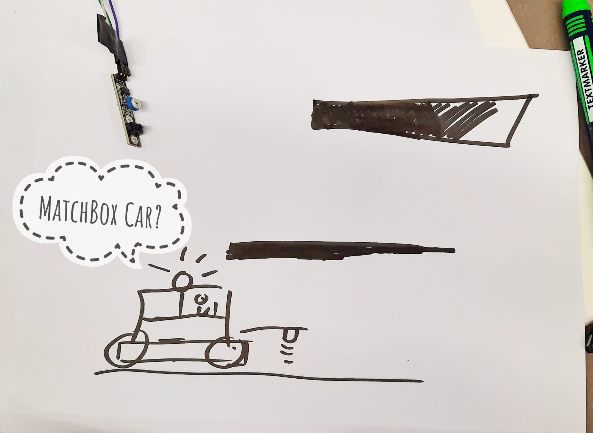
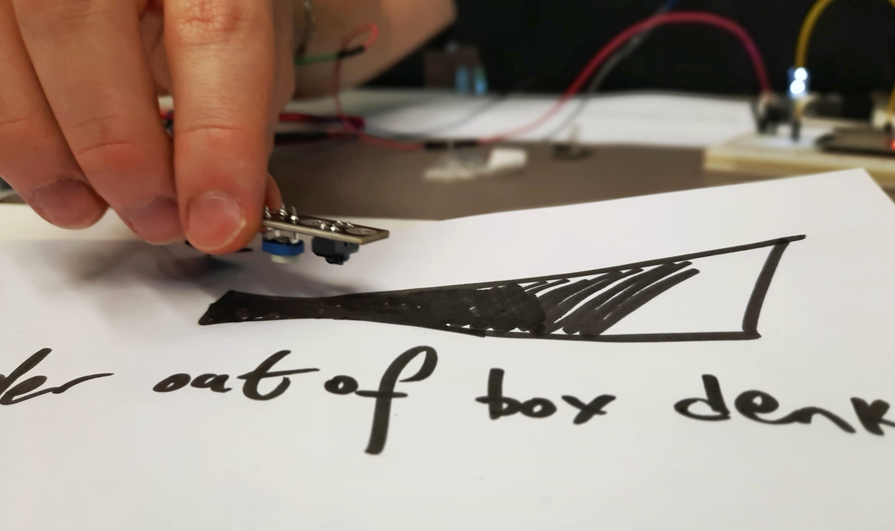
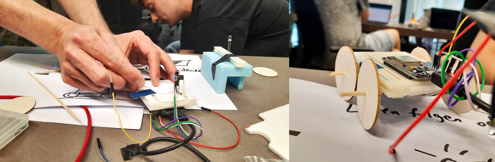

Out of MatchBox
Unusual Conditions
Process
As a group, we decided to explore a sensor that was unfamiliar to us and somewhat
unconventional for our task. We chose
a line detection sensor, which required us to familiarize ourselves with its physical
components and functional
capabilities. However, we found that the documentation for the sensor was rather dry and
uninformative.
The sensor documentation provided an example using a thin line, so we initially attempted
experiments using a regular
marker line. However, this proved to be a suboptimal idea. We discovered that the sensor
was not very accurate,
particularly when trying to detect a fine line, especially if it was in motion.
Given that the sensor worked based on the transmission and reception of infrared signals,
specifically by detecting
whether it encountered a reflecting or absorbing surface, we realized that we needed to
consider another crucial factor:
daylight. To address this, we constructed a small paper box to enclose the sensor,
creating a dark environment around
it. This allowed us to obtain more precise and delicate data.
Additionally, we discovered that the sensor's sensitivity could be adjusted theoretically
using a potentiometer,
offering potential control over its performance in different conditions.

Narrative: The initial idea we had for the line detection sensor involved creating
a simple game where a small car had
to follow specific predetermined lines on a map. The map would feature a starting point
and a finish line, and if the
car crossed any of the lines, it would be considered out of the game.
However, as we progressed with our work, we realized that the narrative of the game felt
somewhat mundane and
predictable. We wanted something more exciting and unconventional. So, we decided to
completely change our approach.
Instead of creating a game, we aimed to use the line detection sensor to represent an
idea—a concept that would
encourage us to think outside the box, embrace non-linear thinking, and embrace the
freedom of creativity. By shifting
our focus to this new narrative, we hoped to spark imagination and exploration beyond
traditional game mechanics.
Implementation
Due to the time constraints we were facing, we had to work on multiple aspects in parallel. While the code was ready, we needed to focus on the physical construction.
 We decided to create a larger car-like structure that could neatly house
all the required technology. The base of the car was a breadboard where we attached the
line detection sensor. On top of
the car, we positioned the LED, resembling a siren on a police car. Our intention was to
create a cohesive design with
these elements.

However, we encountered a challenge with the power supply. The sensor required a minimum
of 3.3 volts to function, but
we couldn't find a suitable battery holder in stock. As a result, we had to use a cable
for the power supply instead.
The motion map for our car had a specific design. The car would start at the top,
symbolizing the beginning of life, and
attempt to move downwards. Along the way, there were black boxes, representing the
stereotypical fixed mindsets
prevalent in our society. These mindsets can create various obstacles throughout our
lives.
When the car entered one of these black boxes, the blue LED would light up, indicating
that we were inside the box. The objective of the game was to
minimize the number of times the car entered these black boxes and strive to navigate
outside the box for the entire
duration of the game.

Outcomes
The fact that the participants couldn't see the sensor directly added an element of
excitement to the interaction. It
made it challenging for them to determine the exact trajectory of the car's movement,
adding an element of surprise and
unpredictability to the experience.
One interesting aspect was gathering feedback from participants about their
interpretations of the abstract figures on
the road map. It became evident that not everyone had the same associations or
understanding of the symbolism presented.
This diversity of interpretations added depth and richness to the overall experience.
To enhance the user-friendliness of the interaction, it would have been beneficial to
incorporate moving wheels on the
car. This visual feedback would have provided participants with a clearer sense of the
car's motion, further immersing
them in the experience.